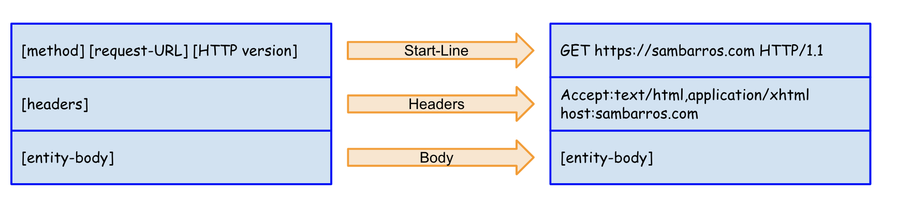

PHP session 2
Freeways HLP departement
Walid sebai
HTTP

what is HTTP?

HTTP = Hypertext Transfert Protocol
The Hypertext Transfer Protocol (HTTP) is an application protocol for distributed, collaborative, hypermedia information systems.[1] HTTP is the foundation of data communication for the World Wide Web. (wikipedia)
what is HTTP?
- TCP/IP based protocol
- Client/Server protocol
- Stateless protocol
- Port 80 by default
How the web works?
How the web works?
- The Client(browser) type in the url
- example: https://www.gnu.org/licenses/licenses.html
- The client send a Request(Http message)
- The server return a Response(Http message)
How the web works?
HTTP request message format
HTTP response message format
Methods
HTTP supports several different request commands, called HTTP methods. Every HTTP request message has a method. The method tells the server what action to perform.
| Method | Description |
|---|---|
| GET | Retrieve information from the server. |
| HEAD | Same as GET, but transfers the status line and header section only. |
| POST | Send data to the server for processing. |
| PUT | Store the body of the request on the server. |
| DELETE | Remove a document from the server. |
| TRACE | Trace the message through proxy servers to the server. |
| OPTION | Determine what methods can operate on a server. |
| CONNECT | Converts the request connection to a transparent TCP/IP tunnel. |
| PATCH | Applies partial modifications to a resource |
CRUD
| Create | POST /books |
| Read | GET /books |
| Update | PUT /books/:id |
| Delete | DELETE /books/:id |
URI/URL

A URI is a string of characters that identifies a particular resource to uniquely identify and locate it around the Web.
An URL is the most common type of URI. It specifies the means of acting upon or obtaining the representation of a resource describing this resource located on a particular server.
URL structure

Status Codes
| 1xx | Informational |
| 2xx | Success |
| 3xx | Redirection |
| 4xx | Client Error |
| 5xx | Server Error |


database
what is a data?
Individual units of information
what is a database?
Systematic collection of data
what is a dbms?
hierarchical dbms
Network dbms
Relational dbms
Relational dbms
Object oriented dbms
- store data elements as objects
Sql
Sturctured query language
standard language for relational databases
effectively used to insert, search, update, delete database records